1984
GTO
The beginning
The starting point of the supercar lineage — the pinnacle of its era.
MARANELLO · 2024
The new supercar from the Prancing Horse
Since 1984, Ferrari has defined each era with a new supercar. Now, with 1200 hp of hybrid V6 power, the F80 becomes the most powerful road-going Ferrari ever created.
Every supercar since 1984 has defined its own era.
Since 1984, Ferrari has periodically released a new supercar that represented the pinnacle of cutting-edge technology and innovation of its era. Intended for the most discerning clients of the brand, these cars immediately became legends in their own lifetime — making an indelible mark not only on the history of Ferrari, but on the history of the automobile itself.
Now the latest addition to this family, the F80, will be produced in a limited run of just 799 examples. It joins the pantheon of icons such as the GTO, F40 and LaFerrari by showcasing the best that Maranello has achieved in technology and performance.
The beginning
The starting point of the supercar lineage — the pinnacle of its era.
The icon
The last project personally approved by Enzo Ferrari — purity in its most essential form.
The hybrid pioneer
Ferrari's first hybrid supercar — electrification and performance, united.
The pinnacle
The most powerful road-going Ferrari ever — 1200 hp of hybrid power.
"The F80 is Ferrari's new supercar, a car destined to join iconic models from the 1984 GTO to the 2016 LaFerrari Aperta."
Aerospace language and Ferrari DNA, for the first time truly one.
The F80 has a strongly futuristic visual impact with unmistakable references to aerospace. Led by Flavio Manzoni, the Ferrari Styling Centre first turned to the aesthetics of the marque's F1 cars — forging a link between the past and future of Ferrari design.
From the very first sketches, the project evolved in a process of natural convergence with engineering, aerodynamics and ergonomics — every line must answer one question: does it serve performance?
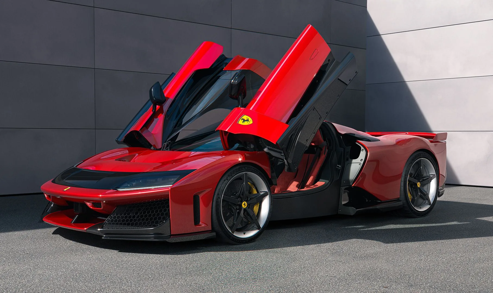
The architecture is defined by a dihedral cross section with its two bottom corners firmly planted on the wheels. The sculpted rear flow emphasises the muscularity of the rear wing.
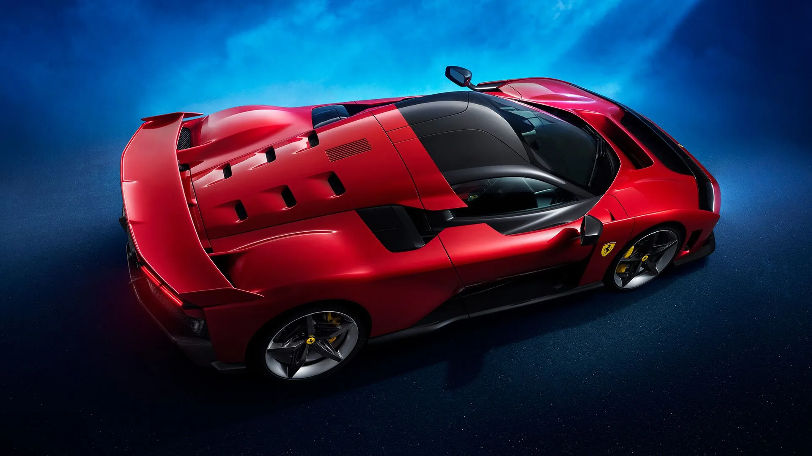
The wheelarch ends with a vertical panel that stands proud of the door — the visual language of the F40, reborn.
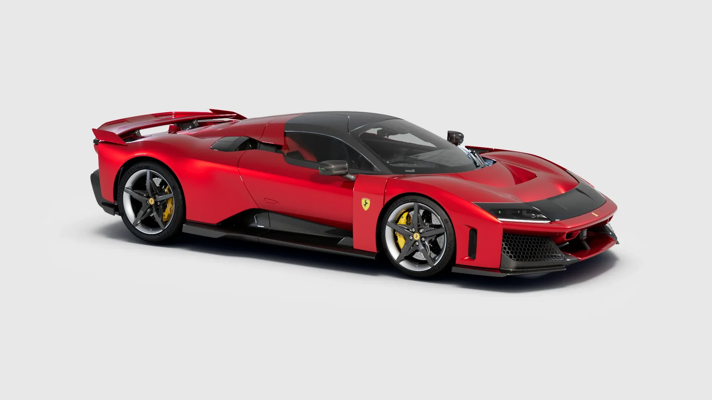
The greenhouse sits 50 mm lower than the LaFerrari's; butterfly doors open to almost 90°; the NACA duct channels air towards the engine intake and lateral radiators — as iconic as it is functional.
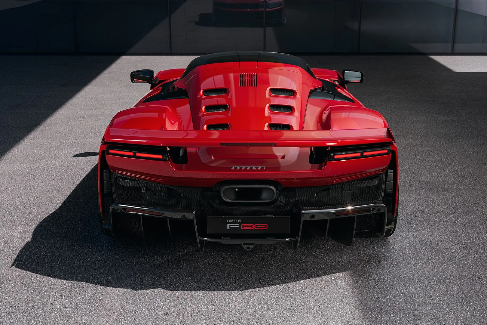
The contrast between the upper zone in bodywork colour and the lower zone in clear-coat carbon fibre reveals more of the technical side with each glance.
"None of what we have achieved with the F80 are easy things to do. They're only possible if you implement this kind of strategy from the very first pencil stroke."
A cocoon around the driver — an enclosed Formula 1 car.
The compact proportions were made possible by opting for a cabin inspired by single-seat racers — an impression akin to an enclosed Formula 1 car. A lengthy process involving designers, engineers, ergonomics specialists and Colour & Trim experts sets the driver unequivocally as the protagonist.
While ergonomically complete and comfortable, the passenger seat is so well integrated into the trim that it almost disappears from view. A longitudinal offset in the seats allows a narrower interior space — less drag, less weight — with no penalty in ergonomics or perceived comfort.
INTERIOR
Every form converges towards the controls and instrument panel.
The driver side has an adjustable seat with a generous range of positions, ensuring comfort and safety in the event of a side-on impact; the passenger side uses a fixed seat to save weight — uncompromised safety for both occupants.
Developed specifically for this car, it will appear in future road-going models of the Prancing Horse. Slightly smaller, with flattened top and bottom rims — the physical buttons on the spokes make a return, identifiable by touch, with or without gloves.
For the first time ever on a Ferrari Supercar, a space behind the seats large enough for a 24 hour suitcase, complete with a retainer mesh and straps. Usability, uncompromised.
900 hp of natural aspiration, 300 hp of electric agility.
The three-litre 120° V6 F163CF produces a peak power of 900 hp, for a specific power of 300 hp/l — the highest of any Ferrari engine ever. The hybrid system adds another 300 hp, for a combined maximum of 1,200 hp.
Its lineage is unmistakable: the architecture, crankcase, layout and drive chains of the timing system, oil pump recovery circuit, bearings, injectors and GDI pumps are closely derived from the 499P that won the last two editions of the 24 Hours of Le Mans. The concepts of the MGU-K and MGU-H come straight from Formula 1.
The MGU-H finds its road-going expression in e-turbo technology — an electric motor between turbine and compressor, delivering extraordinary specific power and instantaneous response. Turbo lag is negated.
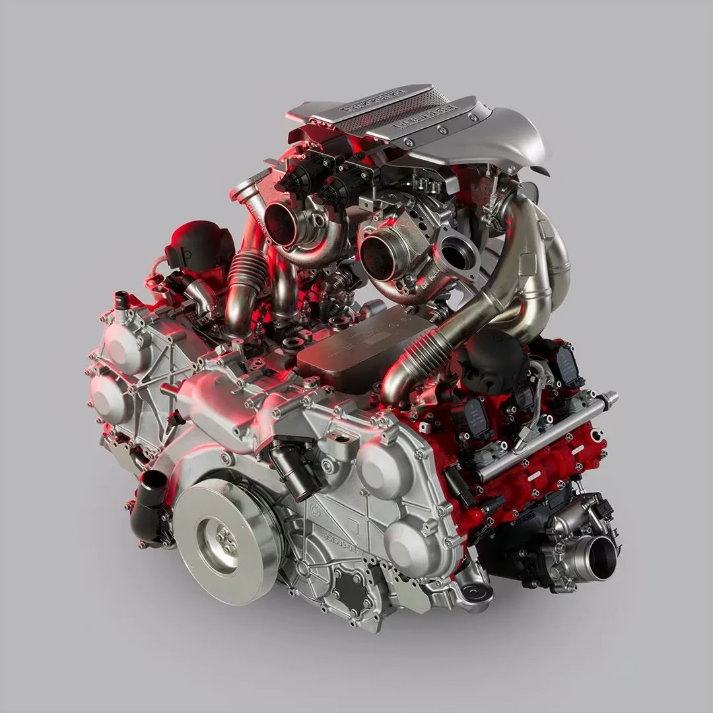
F163CF
A triumph of light weight, and of sound.
e-turbo
The MGU-H concept from F1, reborn for the road.
+300 hp
1,200 hp combined — the most powerful road-going Ferrari ever.
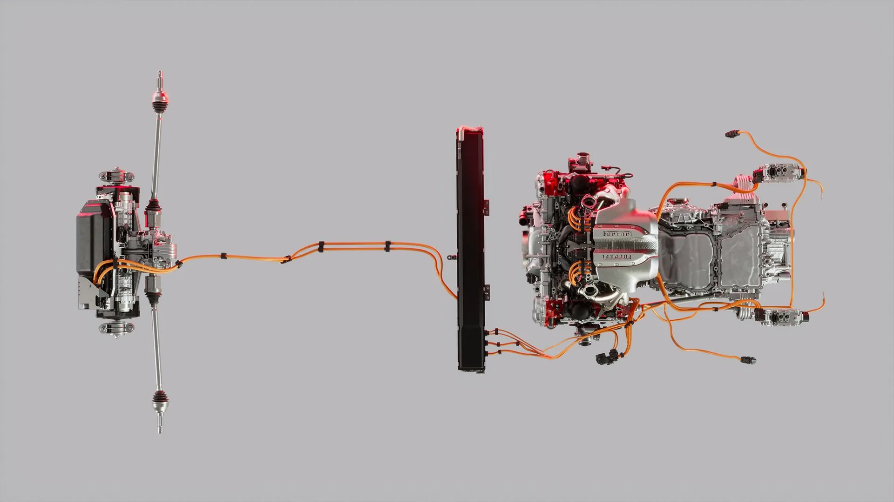
The engine is installed as close as physically possible to the flat undertray — no sump component sits more than 100 mm below the crankshaft centreline. The unit is tilted 1.3° on the Z axis, raising the gearbox to preserve the aerodynamic undertray.
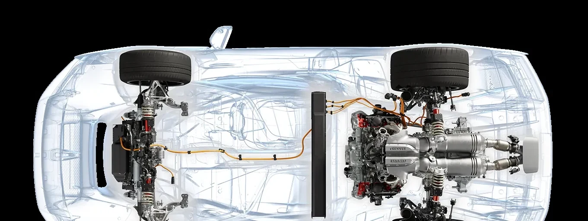
From the 800 V direct current of the high-voltage battery, the Ferrari converter generates 48 V to power the active suspension and e-turbo systems, and 12 V for the electronic control units — with a conversion efficiency in excess of 98%, eliminating the need for a 48 V battery.
A tonne of downforce — a pact with the air.
The active rear wing, rear diffuser, flat underbody, front triplane wing and S-Duct work in concert to generate 1,000 kg of downforce at 250 km/h — a result enhanced by the active suspension, which contributes directly to generating ground effect. Select a red dot on the car to explore how the air is tamed.
MASTER OF THE AIR
Every intake has a reason — no opening is decorative.
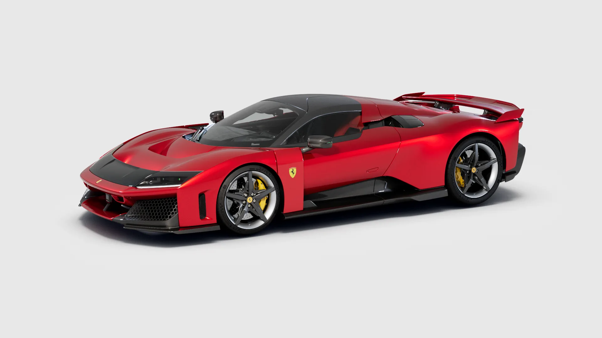
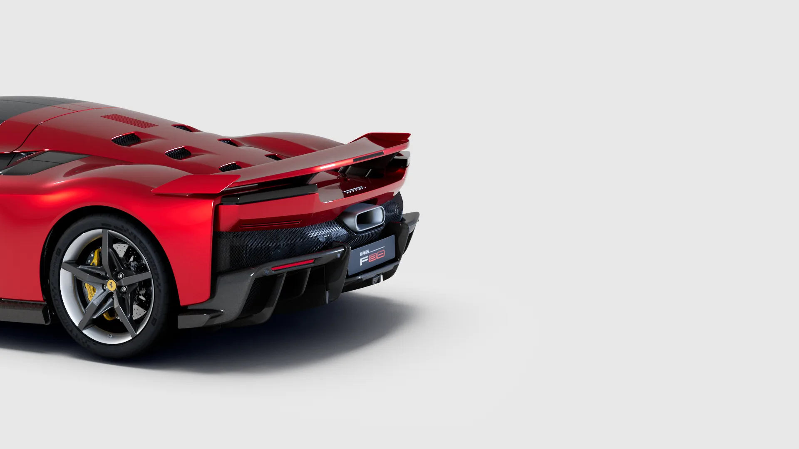
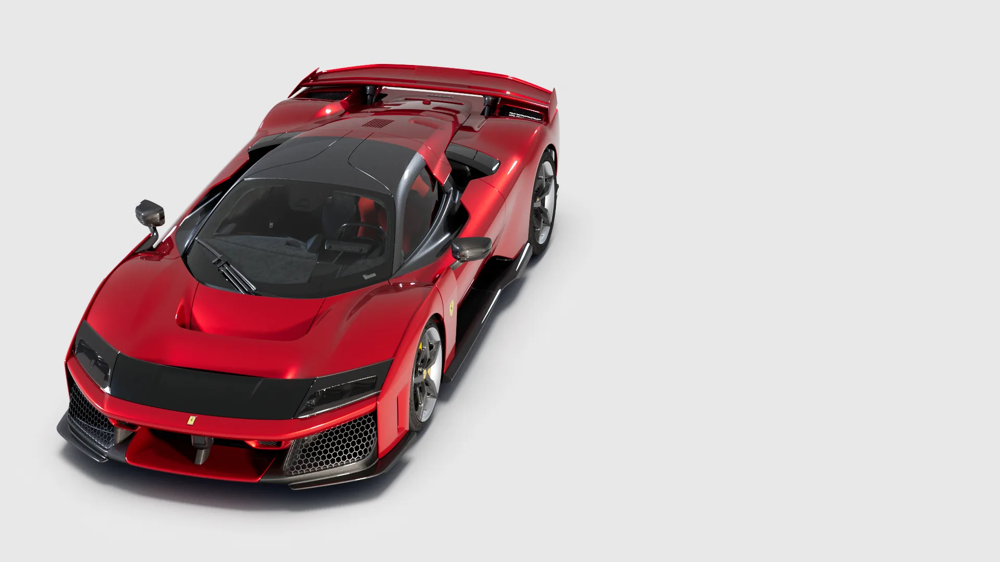
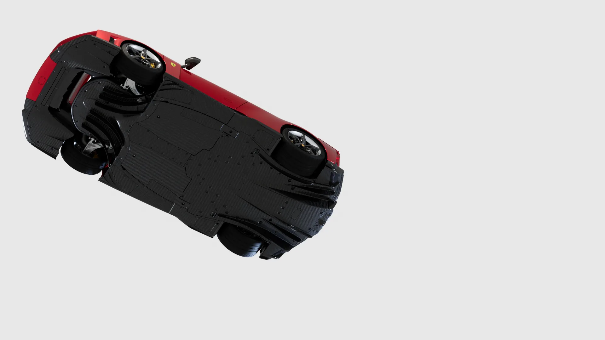
The thermal layout is designed in synergy with the aerodynamics to preserve maximum functionality in terms of vertical load generation. The active elements — front triplane wing and rear wing — change the car's configuration with the dynamic driving condition.
The main piece of the adaptive aerodynamics system. The control systems measure and process acceleration, speed and steering angle in real time, continuously adjusting the wing between the High Downforce (HD) position — used in braking and cornering — and the Low Drag (LD) position, which reduces drag to favour straight-line speed.
The radiant masses are positioned to maximise the flow of free-stream air and the vertical load generated by the car. Cooling and aerodynamics, designed as one.
The development of a three-dimensional aerodynamic floor imposed radical choices: a racing driving position at the front, and a chassis solution with a very low front section. The active suspension contributes directly to generating ground effect — the F80 holds its perfect dialogue with the road, at any instant.
Infinitely adjustable between HD and LD: high downforce for braking and cornering, low drag for the straights — composure beyond 350 km/h.
Radiant masses positioned to maximise free-stream flow and vertical load — every degree calculated.
A racing driving position enables an extremely low front section; the active suspension directly generates ground effect — the perfect dialogue with the road, at any instant.
A fixed element connecting the two front wings, with two flaps completing the system — functional design language at its finest.
A ground-up chassis, and a digital-twin brain.
The chassis of the F80 has been designed completely from the ground up. A multi-material approach: carbon-fibre and composite cell and roof, aluminium front and rear subframes, fastened to the tub with titanium screws. Compared with the LaFerrari: 5% weight saving, +50% torsional and beam stiffness.
The tub features hollow carbon-fibre sills as the main load-bearing elements, cured with dual tubular bladders — an innovative production method derived from Formula 1. As on the LaFerrari, the sills act as side impact absorbers.
CHASSIS
Hollow carbon-fibre sills carry the side loads — and act as side impact absorbers.
Completely independent suspension actuated by four 48V electric motors, double wishbone layout, active inboard dampers, 3D-printed suspension arms. It fulfils two apparently irreconcilable requirements — a very flat ride on the track, and a comfortable, usable ride on the road.
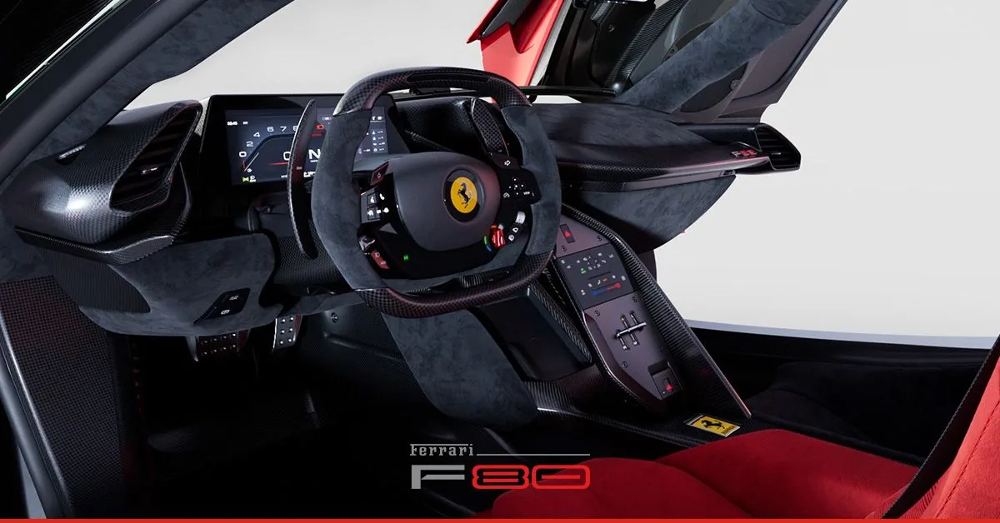
The new SSC 9.0 (Side Slip Control) benefits from the integrated FIVE (Ferrari Integrated Vehicle Estimator), based on the concept of the digital twin — estimating yaw angle and the velocity of the centre of mass in real time, each with a precision of under 1° and 1 km/h respectively.
CCM-R PLUS · CO-DEVELOPED WITH BREMBO
Longer carbon fibres · +100% strength · +300% thermal conductivity · 28 metres from 100 km/h.
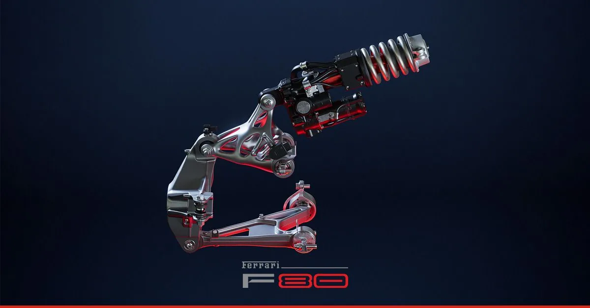
An all-time first for a road-going application: longer carbon fibres significantly improve mechanical strength (+100%) and thermal conductivity (+300%). A silicon carbide coating offers incredible wear resistance. F1-derived ventilation channels, optimised with CFD.
Stability first
The default mode. Prioritises energy recovery and charge maintenance, keeping the MGU-K ready to deliver boost — for road and long distance alike.
Consistency is everything
For extended stints on the track, optimising energy flows to hold battery state of charge around 70% — uninterrupted performance.
Everything, unleashed
All 1,200 hp. Electronic torque shaping during upshifts combines the torque curves of motor and ICE in the best configuration for maximum performance.
'Performance' and 'Qualify' also offer a first for Ferrari and the automotive industry as a whole — Boost Optimization: the system records the track, identifies curves and straights, and delivers extra power exactly where it is needed.
Unlike anything else in the current supercar world, the F80 combines extreme performance with uncompromising usability on the road. The main ADAS functions come as standard: Adaptive Cruise Control with Stop&Go, Automatic Emergency Brake, Lane Departure Warning, Lane Keeping Assist, Auto High Beam, Traffic Sign Recognition and Drowsiness Warning.
All the numbers, at once.
TECHNICAL SPECIFICATIONS
All figures below are from the official Ferrari technical data sheet.
* Maximum speed 350 km/h · Dry weight 1,525 kg · 1.27 kg/hp
Combined power
V6 900 hp + hybrid 300 hp
Maximum speed
The Maranello benchmark
Downforce @ 250 km/h
The extreme of active aero
* Source: ferrari.com model page and official press release (2024-10-17).
MARANELLO · PRANCING HORSE
A 1,200 hp machine, an architecture built for the extreme, the latest member of a legendary lineage. 799 examples, each carrying the obsession of Maranello — and the first 7-year maintenance programme ever offered on a supercar: all regular maintenance for the first seven years of the car's life, original spares, and checks by staff trained at the Ferrari Training Centre in Maranello. The GTO began the legend, the F40 defined the faith, the LaFerrari proved the hybrid. The F80 — it is the prologue to the next era.